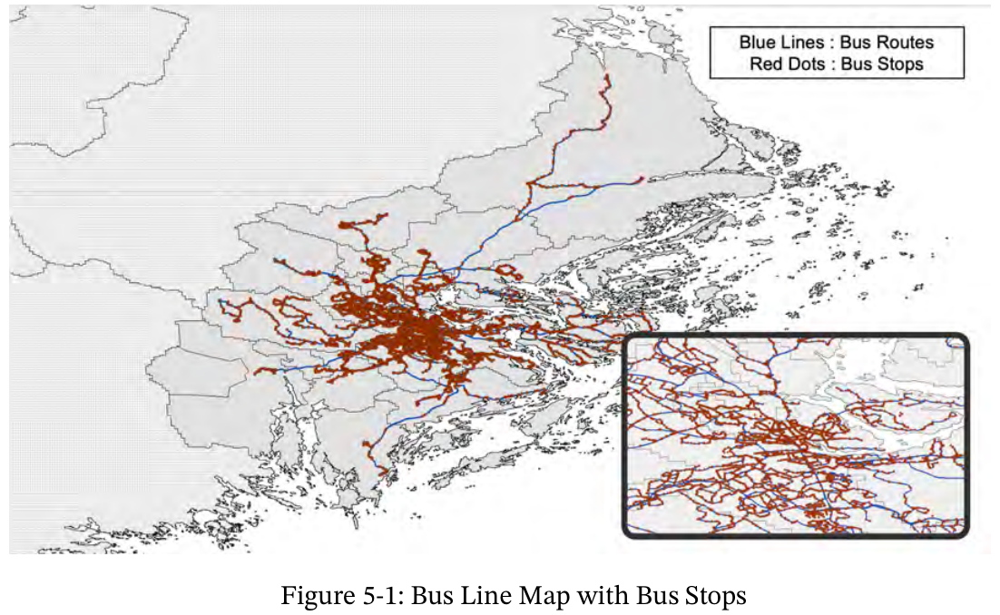
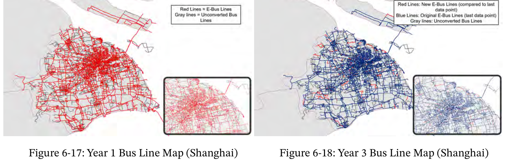
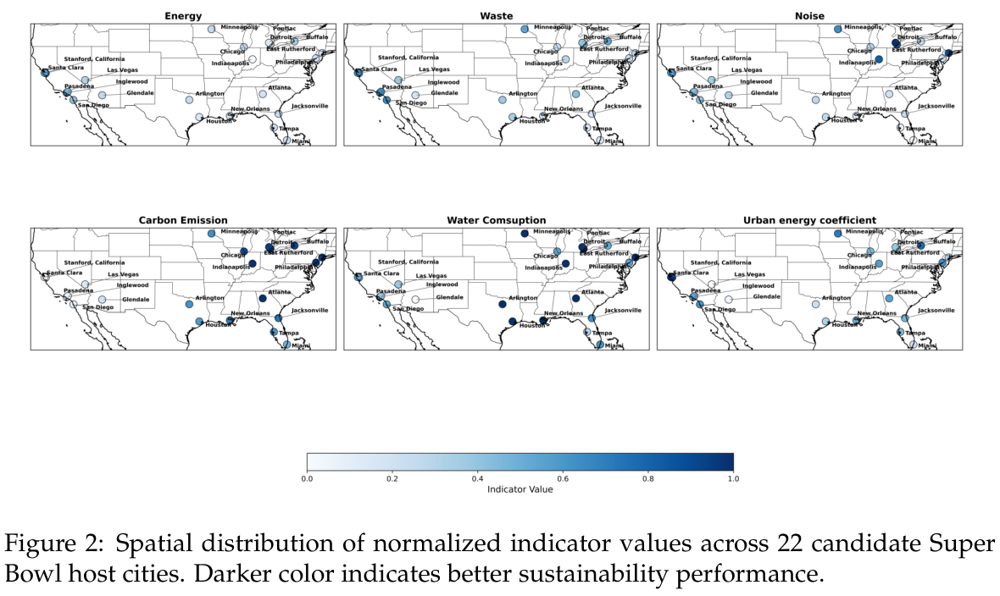
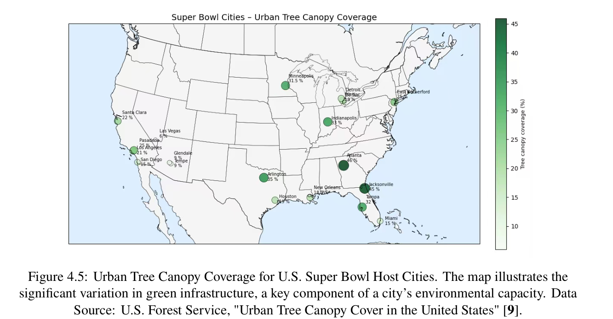
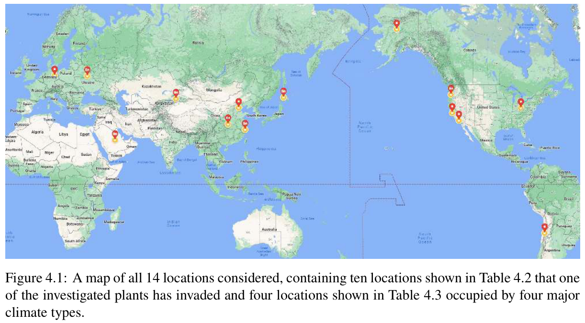
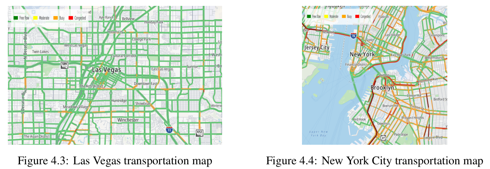
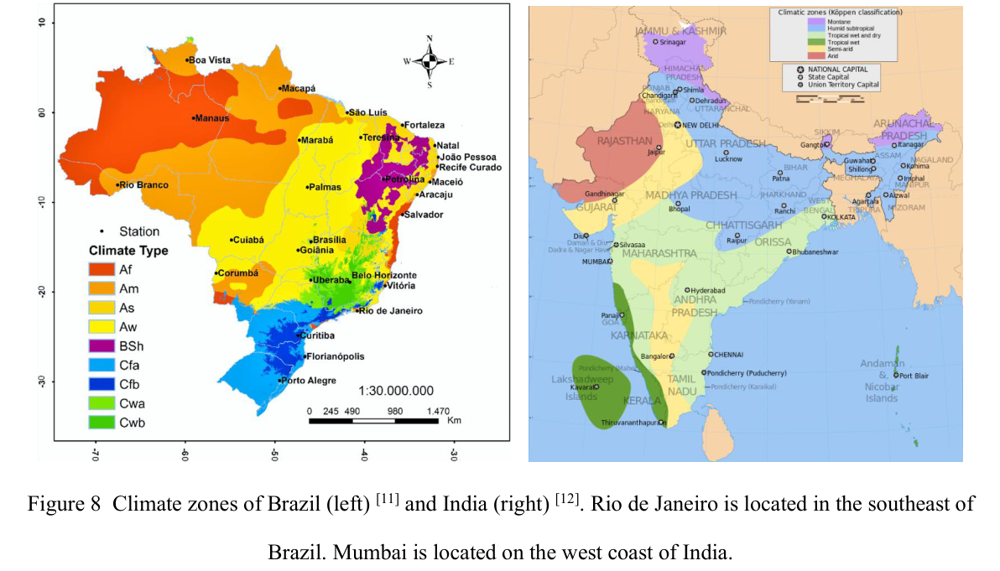
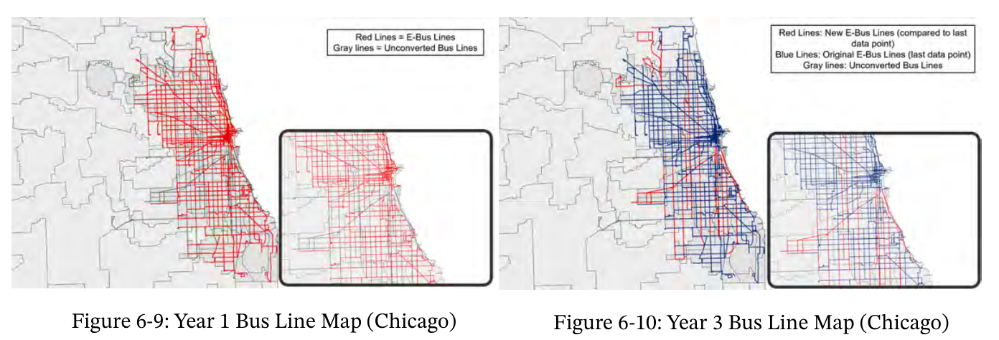
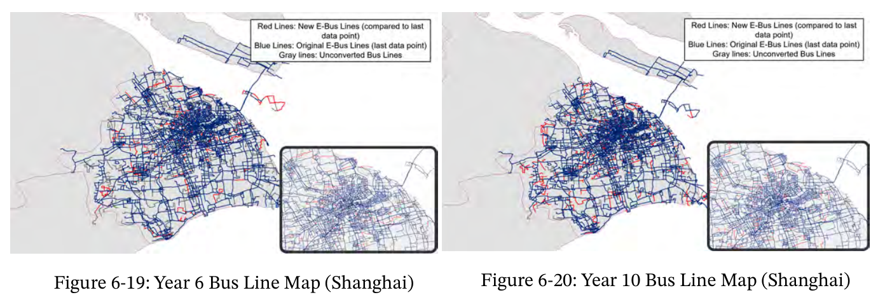
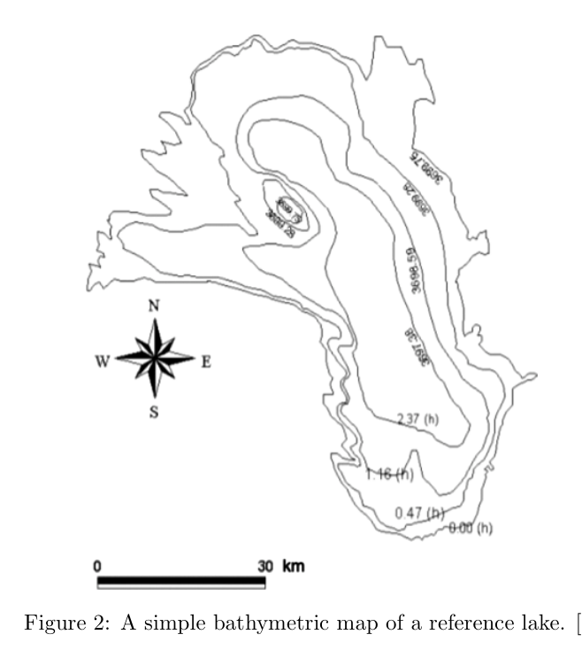

从馆藏论文中筛选：实际地理位置、海岸、道路、行政分区或等深线。排除统计图、热力矩阵、流程图和没有地理底图的模拟散点图。本轮精选10份地图区域，部分包含多幅地图；不是全库地图穷尽清单。

灰色海岸与行政边界作底，线路和站点着色，右下角放大中心区。适合本题展示学校、公共设施与交通可达性。
原始论文及页码
两张图保持地理范围与底图一致，颜色表达线路状态；适合修订前后或不同通学阈值的覆盖对照。
原始论文及页码
相同底图、城市点位与共用色标。适合25城指标的空间分布。原图文字较小，本题应扩大面板、减少底图地名。
原始论文及页码
浅色底图与单一绿色色标，城市位置清楚。适合城市分布或单一指标的空间概览。
原始论文及页码
世界底图标出研究点。适合候选城市总览；底图色彩和地名较密，正式重绘宜降低饱和度。
原始论文及页码
真实道路、河流与路况着色；可参考道路细节，但不直接把原截图当成本题新数据。
原始论文及页码
用类别色标区分气候区，含地点、指北针和比例尺。适合解释城市环境背景，不宜照搬过多高饱和色。
原始论文及页码
规则道路网配浅灰底图，局部放大显示细节。适合城市级出行或设施服务范围对比。
原始论文及页码
延续相同底图和图例，便于跨阶段比较；这里只摘地图，不收录下方折线图。
原始论文及页码
黑白等值线、指北针、比例尺。地理表达清楚，但与本题城市比较的直接关联较弱。
原始论文及页码